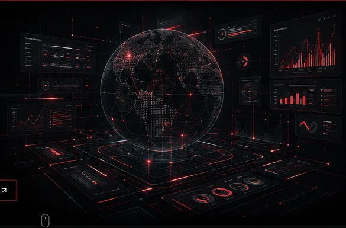
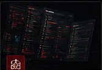
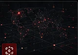

01
IA y automatización
Sistemas inteligentes que automatizan tareas, conectan herramientas y reducen trabajo operativo.
Ver más →Transformamos datos, procesos y tecnología en ventajas reales. Estrategia digital, IA, sistemas web y operaciones diseñadas para producir resultados.

No vendemos herramientas sueltas. Conectamos estrategia, datos, personas y tecnología alrededor de un objetivo.
Sistemas inteligentes que automatizan tareas, conectan herramientas y reducen trabajo operativo.
Ver más →
No entregamos páginas web. Construimos sistemas digitales rápidos, escalables y orientados a resultados.
Ver más →Investigación, posicionamiento, contenido y campañas construidas alrededor de objetivos comerciales.
Ver más →
Investigación de fuentes abiertas, análisis de entorno e información para tomar mejores decisiones.
Ver más →Procesos, paneles, datos e integraciones dentro de un flujo operativo coherente y medible.
Ver más →Una página web, una campaña o una automatización por sí mismas tienen un alcance limitado.
TRACCE conecta estrategia, contenido, tecnología, datos y operación dentro de un mismo ecosistema.
Cada unidad tiene una función clara y puede operar sola o integrarse en un sistema mayor.
Estrategia digital, marketing, posicionamiento, contenido, publicidad y crecimiento comercial.
Conocer LYNK →Seguridad digital, sistemas, investigación y soluciones tecnológicas para personas, familias y empresas.
Conocer LYNXUS →Gestión, posicionamiento y desarrollo estratégico de talento e imagen digital.
Conocer IMMAGE →La tecnología entra después de entender qué debe suceder, quién lo supervisa y cómo se mide.
Negocio, competencia, entorno, clientes y oportunidades.
Estrategia, estructura, herramientas y prioridades.
Sistemas, contenido, campañas y automatizaciones.
Resultados, operación y comportamiento.
El sistema aprende, mejora y evoluciona.
Usamos IA para investigar, analizar, producir y automatizar; definimos límites, permisos, objetivos y puntos de control antes de ejecutar.
Cuéntanos qué necesitas. Analizamos cómo convertirlo en un sistema funcional.